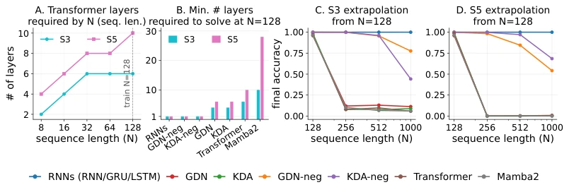
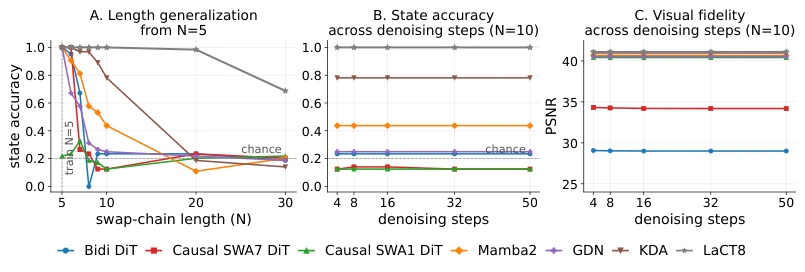
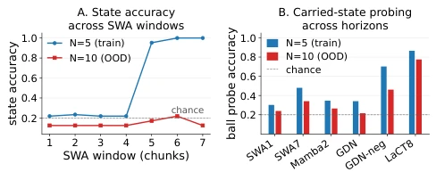
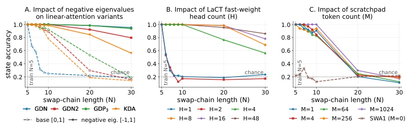
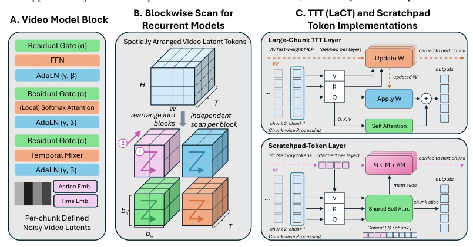

Video World Models (VWM) are now akin to method actors, generating frames that appear realistic frame by frame, yet they instantly falter once involving "invisible" objects. This paper sharply argues that Visual Fidelity does not equate to State Tracking. Models can render plausible scenes but fail to remember which cup contains the ball. This is akin to actors memorizing lines while forgetting the script's logic. The authors employ the "Shell Game" as a visual analogy for S5 state tracking, exposing a fatal flaw in current pixel-supervised diffusion models during long-sequence extrapolation—they merely fit shortcuts corresponding to training lengths rather than truly understanding physical states. More interestingly, increasing denoising steps offers no help for state tracking, directly debunking the fantasy that "iterative reasoning increases depth." Although the conclusions are robust, the experimental scenarios remain synthetic; whether they apply to real-world dynamic occlusion and physical interaction still requires verification.
研究动机Motivation
具身智能需要模型记住不可见状态（occluded objects），但现有 VWM 仅以生成视频的可信度为评估标准（Bruce et al., 2024; Parker-Holder et al., 2024）。理论研究表明，固定深度的 Transformer 和状态空间模型属于 TC0 复杂度类，无法解决非可解群（如 S5）的单词问题（Merrill et al., 2024; Merrill & Sabharwal, 2022）。这意味着标准架构无法通过并行计算组合任意长的状态更新。现有工作如 Liu et al. (2025) 指出扩散去噪循环不增加串行深度。因此，如何让模型在像素监督下隐式维护隐藏状态成为关键。本文旨在填补状态追踪理论与视频生成实践之间的鸿沟，探究架构如何承载状态，以及何种更新规则能实现外推。
Embodied AI requires models to remember occluded states, yet existing VWMs only evaluate based on the credibility of generated videos (Bruce et al., 2024; Parker-Holder et al., 2024). Theoretical research indicates that fixed-depth Transformers and state space models belong to the TC0 complexity class and cannot solve the word problem for non-solvable groups (such as S5) (Merrill et al., 2024; Merrill & Sabharwal, 2022). This implies standard architectures cannot combine arbitrarily long state updates through parallel computation. Existing work, such as Liu et al. (2025), notes that diffusion denoising loops do not increase serial depth. Therefore, how to enable models to implicitly maintain hidden states under pixel supervision becomes critical. This paper aims to bridge the gap between state tracking theory and video generation practice, investigating how architectures carry states and what update rules can achieve extrapolation.

Figure 1: Pixel-free state tracking on the swap-only S3 and S5 word problems. (A) Minimum number of Transformer layers required to solve a problem of sequence length N. (B) Minimum number of layers required by each architecture at N=128. (C) Length extrapolation on S3 after training at N=128. (D) Length extrapolation on S5 after training at N=128.
The overall approach adopts an action-conditioned video diffusion framework based on a Wan-style latent video diffusion transformer. The core innovation lies in modifying the architecture for state carrying capacity. 1. Data Construction: Design a visual Shell Game with 5 cups exchanging, where the ball is invisible during the exchange, forcing the model to track the hidden permutation. 2. Negative Eigenvalue Linear Attention: Traditional linear attention (e.g., GDN) has non-negative transfer eigenvalues and cannot implement reflection operations. This paper relaxes the βt range to [0, 2], allowing eigenvalues to cover [-1, 1], enabling the model to achieve state exchange via reflection (Grazzi et al., 2024). 3. Test-time Training (TTT) Fast Weights: Introduce the LaCT mechanism, using SwiGLU as a fast-weight MLP. The key is updating the W0 and W2 feature mappings rather than only the W1 readout matrix, making the effective kernel dependent on history and achieving in-place revision of states within the feature space. 4. Explicit Scratchpad: Attempted adding memory tokens, but found pure additive updates lead to long-sequence norm explosion, making them less stable than fast weights.

Figure 4: Shell Game state tracking and visual fidelity under length and denoising-step sweeps. All recurrent and linear-attention variants share an SWA1 backbone; the causal DiTs are labeled by their window size. (A) Length generalization for representative video backbones trained at N=5 swaps and evaluated through N=30: most standard backbones fit only short horizons and fall to- ward chance, while LaCT8 retains substantially higher state accuracy. (B) At the extrapolation length N=10, increasing the denoising budget from 4 to 50 sampling steps does not improve state accuracy. (C) The same N=10 denoising-step sweep shows high PSNR across models even when state accuracy is near chance, separating visual fidelity from hidden-state tracking.
The dataset is a synthetic Shell Game (5 cups, N=5 for training, N=30 for evaluation). Baselines include Transformer, Mamba2, GDN, etc. Metrics include ball position accuracy (State Accuracy) and PSNR. Results reveal: 1. Standard baselines perform perfectly within the training length, but accuracy drops to random levels when extrapolating to N=10, despite PSNR remaining high, proving visual fidelity and state tracking are decoupled. 2. Increasing denoising steps (from 4 to 50) does not improve state accuracy. 3. The negative eigenvalue variant (GDN-neg) and LaCT8 successfully extrapolate. 4. The Explicit Scratchpad fails at N=20. 5. Probe experiments show the KV cache only carries action information and cannot decode the hidden ball position; however, hidden states from LaCT and GDN-neg can be decoded.

Figure 5: SWA size ablation and hidden-state decodabil- ity. The recurrent and linear-attention variants all use an SWA1 backbone. (A) Increasing the SWA window lets a causal DiT fit the training horizon (N = 5) once the full swap history is visible, but all windows fail at N = 10. SWA7 spans all eight chunks of a training episode and is therefore the widest context available. (B) Best-layer hidden-ball probe accuracy from B = 16 fixed-bank reads of the carried state over all swap chunks at N = 5 and N = 10. Current-readout probes decode the visible swap identity at 1.00 for every shown model and horizon but carry little hidden-ball information (not plotted). GDN-neg and especially LaCT8 retain the strongest decodable state.

Figure 6: Length extrapolation of mechanisms that enable state tracking. All variants share the same SWA1 backbone, with the temporal mechanism added on top. The bare backbone alone (SWA1, M=0 in (C)) never rises above chance, failing even at the in-distribution length N=5, so it serves as the natural chance-level control. (A) Extending the transition eigenvalue range from [0, 1] to [−1, 1] improves state accuracy across linear-attention variants. (B) LaCT extrapolation improves with the number of fast-weight heads H. (C) Adding explicit per-layer read/writable scratchpad tokens improves extrapolation through N=10 but fails by N=20.
其他图片Other Figures

Figure 3: Architectural details. (A) A canonical block stacks a temporal mixer, a sliding-window softmax attention with 3D RoPE, and an FFN as residual sublayers (pure-attention baselines drop the temporal mixer). Each sublayer applies standard AdaLN (Peebles & Xie, 2022), with scale γ, shift β, and residual gate α regressed from the action and diffusion-timestep embeddings. (B) Following Po et al. (2025), we first reshape video tokens into an H × W × T spatial latent grid and split into bh × bw × T smaller blocks scanned independently, for better parallelism and a larger effective state. (C) Two examples of persistent per-layer recurrent states carried across autoregressive rollouts. LaCT updates fast-weight MLP W from the chunk’s keys/values, applies it to the queries, and sums with a se